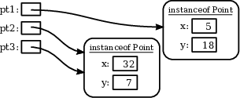

CPSC 124, Fall 2021: Sample Answers to Quiz #6
These are sample answers only.
Question 1. Discuss "getter methods" and "setter methods." What are they, why are they used, and why are they often used for private instance variables?
Answer. Getters and Setters are associated with instance variables. A getter method for an instance variable is a method that returns the value of that variable. A setter method for an instance variable sets the value of the variable to a specified value. Getters and setters are used because they protect the variable by controlling over what can be done to the variable. For example, a setter method can check whether the value that it is given is a legal value for the variable. It not, it can through an exception. This will mean that as long as the variable's value is set using the setter method, then it can never have an illegal value.
Getters and setters are often used with private instance variables because private variables can only be directly accessed in the file where they are declared. By making the variable private, you make sure that the variable can only be changed from outside the class by using the setter method. If the variable is public, then it can be changed to any value from outside the class, without using the setter method. But then there is no way to guarantee that it will always have a legal value.
Question 2. Explain what null means in a Java program.
Answer. An object variable (whose type is given by a class) can hold a pointer to an object, or it can hold the special value null, which is a special pointer value that indicates that the variable is not currenctly pointing to any object.
 Question 3. Consider the class Point defined below. Write a Java code segment that will produce the picture at the right when it is executed. That is, declare three variables named pt1, pt2, and pt3. Then create some objects, with the end result as shown in the picture.
public class Point {
public int x,y;
public Point(int a, int b) {
x = a;
y = b;
}
}
Answer.
Point pt1, pt2, pt3;
pt1 = new Point(5,18);
pt2 = new Point(32,7);
pt3 = pt2;